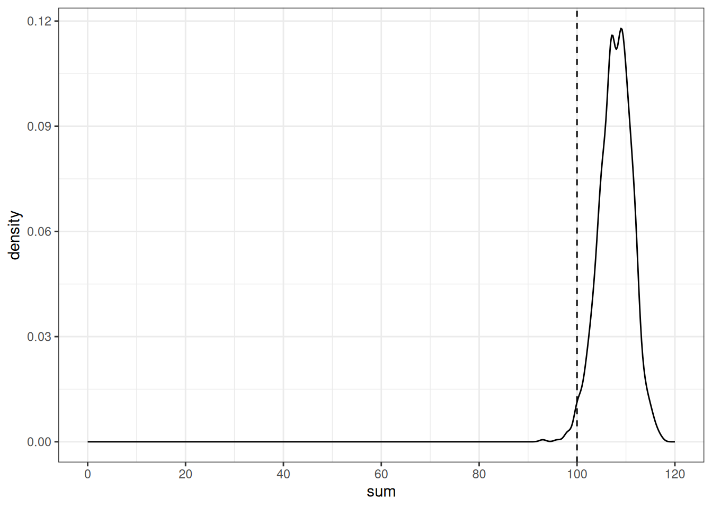
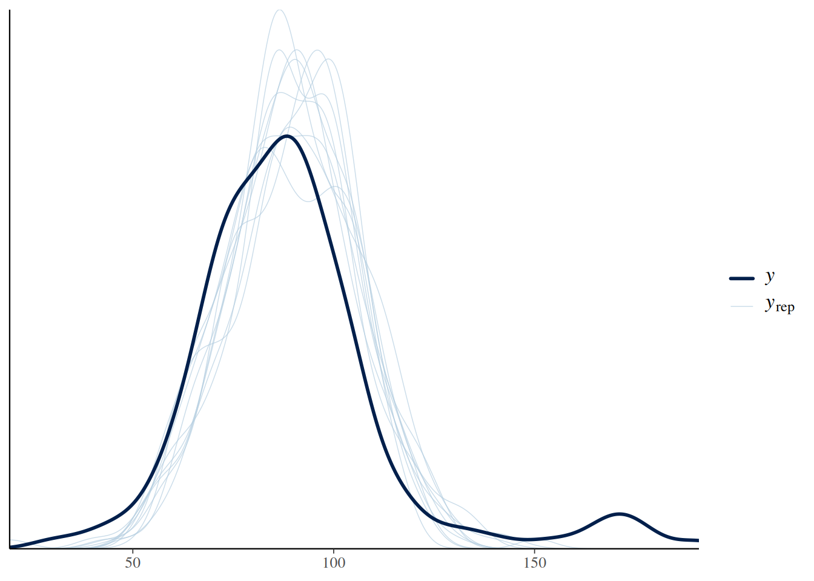

library(tidyverse)7 Введение в Марковские цепи Монте-Карло
Марковская цепь Монте-Карло (Markov chain Monte Carlo, MCMC) — это класс алгоритмов для семплирования, которые позволяют моделировать некоторое распределение вероятностей. При моделировании используют разные алгоритмы, мы будем смотреть на примере алгоритма Метрополиса-Гастингса (Metropolis-Hastings).
Для того, чтобы в этом разобраться нам потребуется обсудить:
- метод Монте-Карло;
- марковские цепи;
- алгоритма Метрополиса-Гастингса.
7.1 Марковские цепи
Марковский процесс
- конечное количество состояний
- вероятность переходов из одного состояния в другое
Возьмем наш датасет с sms и посмотрим частоты разных частей речи::

Теперь давайте посмотрим на частотность переходов из одних состояний в другие:

Иногда это визуализируют при помощи графов, но в нашем случае (это граф ham) это достаточно бесполезно (наводите на вершины стрелочки, чтобы что-то разглядеть):
Можно посмотреть на славную визуализацию (спасибо за ссылку Марине Дубовой).
7.2 Хакерская статистика (основано на “Статистика для хакеров” Джейка Вандерпласа)
Вообще симуляции позволяют делать статистику более осмысленной.
7.2.1 Биномиальные данные
Вероятность получить 100 успехов из 120 случаев, если мы верим, что вероятность успеха равна 0.9 описывается биномиальным распределением:
\[P(H = h|p, n) = \binom{n}{h}\times p^h\times(1-p)^{1-h}\]
Фреквентистский подход: биномиальный тест
- H\(_0\) человек говорит s-генитив с вероятностью 0.9
- α = 0.05
Warning: Removed 107 rows containing non-finite outside the scale range
(`stat_align()`).
Байесовский подход: биномиальная функция правдоподобия перемножается с априорным бета распределением чтобы получить апостериорное распределение.
tibble(h = seq(0, 1, 0.01),
y = dbeta(h, shape1 = 100 + 90, shape2 = 20 + 10)) |>
ggplot(aes(h, y))+
geom_line()+
geom_area(aes(x = ifelse(h>=qbeta(0.025, shape1 = 100 + 90, shape2 = 20 + 10) &
h<=qbeta(0.975, shape1 = 100 + 90, shape2 = 20 + 10), h, NA)), fill = "darkgreen")+
geom_vline(xintercept = 100/120, linetype = 2)Warning: Removed 92 rows containing non-finite outside the scale range
(`stat_align()`).
Хакерский подход: симуляция:
set.seed(42)
map_dbl(1:1000, function(i){
sample(0:1, 120, replace = TRUE, prob = c(0.1, 0.9)) |>
sum()
}) ->
simulations
tibble(sum = simulations) |>
mutate(greater = sum <= 100) |>
group_by(greater) |>
summarise(number = n())tibble(sum = simulations) |>
ggplot(aes(sum))+
geom_density()+
geom_vline(xintercept = 100, linetype = 2)+
scale_x_continuous(breaks = c(0:9*20), limits = c(0, 120))
Аналогично можно использовать:
- случайное перемешивание вместо двухвыборочного t-теста;
- бутстрэп вместо одновыборочного t-теста.
7.2.2 Метод Монте-Карло
Группа методов изучения случайных процессов, которые базируются на:
- возможности производить бесконечного количества случайных значений
- для известных или новых распределений
Представим себе, что у нас есть какой-то интеграл, который мы хотим посчитать. Например такой:
tibble(x = seq(0, 1, length.out = 1000)) |>
ggplot(aes(x))+
stat_function(fun = function(x){x^12-sin(x)+1}, geom = "area", fill = "lightblue")
Мы можем насэмплировать точек из комбинации двух унимодальных распределений u(0, 1), и u(0, 1.2) и посмотреть, кто попадает в область, а кто нет:
set.seed(42)
tibble(x = runif(1e3, 0, 1),
y = runif(1e3, 0, 1.2),
in_area = y < x^12-sin(x)+1) |>
ggplot(aes(x, y))+
stat_function(fun = function(x){x^12-sin(x)+1}, geom = "area", fill = "lightblue")+
geom_point(aes(color = in_area), show.legend = FALSE)
Сколько попало?
set.seed(42)
tibble(x = runif(1e3, 0, 1),
y = runif(1e3, 0, 1.2),
in_area = y < x^12-sin(x)+1) |>
count(in_area)528/1000*1.2[1] 0.6336integrate(function(x){x^12-sin(x)+1}, 0, 1)0.6172254 with absolute error < 6.9e-15А если увеличить количество наблюдений?
set.seed(42)
tibble(x = runif(1e7, 0, 1),
y = runif(1e7, 0, 1.2),
in_area = y < x^12-sin(x)+1) |>
count(in_area)5143667/10000000*1.2[1] 0.61724integrate(function(x){x^12-sin(x)+1}, 0, 1)0.6172254 with absolute error < 6.9e-157.3 Соединение идей Марковских цепей и Монте-Карло
shiny::runGitHub("agricolamz/mcmc_shiny")Основные проблемы MCMC:
- Зависимость от начального значения. Решение: выкинуть начальную часть цепи (burn-in).
- Полученные значения автокоррелируют, так как они были получины при помощи марковского процесса. Решение: брать, например, каждое третье значение.
Вы можете почитать историю идей MCMC в работе (Robert and Casella 2011) (доступна здесь).
7.4 brms
Для вычисления всяких сложных статистических моделей люди придумали вероятностные языки программирования. Чаще всего они являются расширением для стандартных языков программирования, но иногда становятся самодостаточными языками (однако они все равно написаны на каких-то быстрых языках программирования типа C++). Примерами таких самодостаточных языков является:
- BUGS (Bayesian inference Using Gibbs Sampling)
- JAGS (Just Another Gibbs Sampler)
- NIMBLE
- NUTS (No-U-Turn-Sampler)
- Stan
Для них пишут обертки на разных языках, мы будем использовать пакет brms, который является оберткой над пакетом rstan, который является оберткой для Stan. Вы можете установить эти пакеты к себе на компьютер, но есть высокая вероятность, что что-то пойдет не так, в связи с чем, я предлагаю всем использовать rstudio.cloud для примеров на brms.
Чтобы повторить примеры Вам нужно:
- Установить на свой компьютер
rstan(инструкции) иbrms
Если на вашем компьютере не выходит, попробуйте <posit.cloud>
7.4.1 Пример оценки параметра
В данном разделе мы постараемся оценить параметры распределения используя MCMC. Мы будем делать это при помощи регресии:
\[y_i = \hat{\beta_0} + \epsilon_i\mbox{, where } \epsilon_i \sim Normal(\mu = 0, \sigma)\]
Однако это то же самое, что и сказать
\[y_i = Normal(\mu = \hat{\beta_0}, \sigma)\]
read_csv("https://raw.githubusercontent.com/agricolamz/2024_HSE_b_da4l/master/data/Coretta_2017_icelandic.csv") |>
filter(speaker == "tt01") ->
vowel_dataВ качестве первого этапа стоит сформулировать модель и посмотреть, в какой форме от нас ожидают априорное распределение.
library(brms)
get_prior(vowel.dur ~ 1,
family = gaussian(),
data = vowel_data)Сделаем нашу первую модель:
normal_fit <- brm(vowel.dur ~ 1,
data = vowel_data,
family = gaussian(),
1 prior = c(prior(normal(275, 65), class = Intercept, lb = 0),
2 prior(normal(0, 1), class = sigma, lb = 0)),
silent = TRUE)
normal_fit- 1
-
Аргументы
lbиubпозволяют задать верхние и нижние границы априорного распределения. - 2
-
Сообщая
brmsинформациюclass = sigmaмы уже говорим, что это стандартное отклонение, и что оно всегда положительное, но я решил добавить для единообразия.
Running /usr/lib/R/bin/R CMD SHLIB foo.c
using C compiler: ‘gcc (Ubuntu 13.3.0-6ubuntu2~24.04.1) 13.3.0’
gcc -I"/usr/share/R/include" -DNDEBUG -I"/home/agricolamz/R/x86_64-pc-linux-gnu-library/4.3/Rcpp/include/" -I"/home/agricolamz/R/x86_64-pc-linux-gnu-library/4.3/RcppEigen/include/" -I"/home/agricolamz/R/x86_64-pc-linux-gnu-library/4.3/RcppEigen/include/unsupported" -I"/home/agricolamz/R/x86_64-pc-linux-gnu-library/4.3/BH/include" -I"/home/agricolamz/R/x86_64-pc-linux-gnu-library/4.3/StanHeaders/include/src/" -I"/home/agricolamz/R/x86_64-pc-linux-gnu-library/4.3/StanHeaders/include/" -I"/home/agricolamz/R/x86_64-pc-linux-gnu-library/4.3/RcppParallel/include/" -I"/home/agricolamz/R/x86_64-pc-linux-gnu-library/4.3/rstan/include" -DEIGEN_NO_DEBUG -DBOOST_DISABLE_ASSERTS -DBOOST_PENDING_INTEGER_LOG2_HPP -DSTAN_THREADS -DUSE_STANC3 -DSTRICT_R_HEADERS -DBOOST_PHOENIX_NO_VARIADIC_EXPRESSION -D_HAS_AUTO_PTR_ETC=0 -include '/home/agricolamz/R/x86_64-pc-linux-gnu-library/4.3/StanHeaders/include/stan/math/prim/fun/Eigen.hpp' -D_REENTRANT -DRCPP_PARALLEL_USE_TBB=1 -fpic -g -O2 -fno-omit-frame-pointer -mno-omit-leaf-frame-pointer -ffile-prefix-map=/build/r-base-FPSnzf/r-base-4.3.3=. -fstack-protector-strong -fstack-clash-protection -Wformat -Werror=format-security -fcf-protection -fdebug-prefix-map=/build/r-base-FPSnzf/r-base-4.3.3=/usr/src/r-base-4.3.3-2build2 -Wdate-time -D_FORTIFY_SOURCE=3 -c foo.c -o foo.o
In file included from /home/agricolamz/R/x86_64-pc-linux-gnu-library/4.3/RcppEigen/include/Eigen/Core:19,
from /home/agricolamz/R/x86_64-pc-linux-gnu-library/4.3/RcppEigen/include/Eigen/Dense:1,
from /home/agricolamz/R/x86_64-pc-linux-gnu-library/4.3/StanHeaders/include/stan/math/prim/fun/Eigen.hpp:22,
from <command-line>:
/home/agricolamz/R/x86_64-pc-linux-gnu-library/4.3/RcppEigen/include/Eigen/src/Core/util/Macros.h:679:10: fatal error: cmath: No such file or directory
679 | #include <cmath>
| ^~~~~~~
compilation terminated.
make: *** [/usr/lib/R/etc/Makeconf:191: foo.o] Error 1
SAMPLING FOR MODEL 'anon_model' NOW (CHAIN 1).
Chain 1:
Chain 1: Gradient evaluation took 2.1e-05 seconds
Chain 1: 1000 transitions using 10 leapfrog steps per transition would take 0.21 seconds.
Chain 1: Adjust your expectations accordingly!
Chain 1:
Chain 1:
Chain 1: Iteration: 1 / 2000 [ 0%] (Warmup)
Chain 1: Iteration: 200 / 2000 [ 10%] (Warmup)
Chain 1: Iteration: 400 / 2000 [ 20%] (Warmup)
Chain 1: Iteration: 600 / 2000 [ 30%] (Warmup)
Chain 1: Iteration: 800 / 2000 [ 40%] (Warmup)
Chain 1: Iteration: 1000 / 2000 [ 50%] (Warmup)
Chain 1: Iteration: 1001 / 2000 [ 50%] (Sampling)
Chain 1: Iteration: 1200 / 2000 [ 60%] (Sampling)
Chain 1: Iteration: 1400 / 2000 [ 70%] (Sampling)
Chain 1: Iteration: 1600 / 2000 [ 80%] (Sampling)
Chain 1: Iteration: 1800 / 2000 [ 90%] (Sampling)
Chain 1: Iteration: 2000 / 2000 [100%] (Sampling)
Chain 1:
Chain 1: Elapsed Time: 0.022 seconds (Warm-up)
Chain 1: 0.021 seconds (Sampling)
Chain 1: 0.043 seconds (Total)
Chain 1:
SAMPLING FOR MODEL 'anon_model' NOW (CHAIN 2).
Chain 2:
Chain 2: Gradient evaluation took 5e-06 seconds
Chain 2: 1000 transitions using 10 leapfrog steps per transition would take 0.05 seconds.
Chain 2: Adjust your expectations accordingly!
Chain 2:
Chain 2:
Chain 2: Iteration: 1 / 2000 [ 0%] (Warmup)
Chain 2: Iteration: 200 / 2000 [ 10%] (Warmup)
Chain 2: Iteration: 400 / 2000 [ 20%] (Warmup)
Chain 2: Iteration: 600 / 2000 [ 30%] (Warmup)
Chain 2: Iteration: 800 / 2000 [ 40%] (Warmup)
Chain 2: Iteration: 1000 / 2000 [ 50%] (Warmup)
Chain 2: Iteration: 1001 / 2000 [ 50%] (Sampling)
Chain 2: Iteration: 1200 / 2000 [ 60%] (Sampling)
Chain 2: Iteration: 1400 / 2000 [ 70%] (Sampling)
Chain 2: Iteration: 1600 / 2000 [ 80%] (Sampling)
Chain 2: Iteration: 1800 / 2000 [ 90%] (Sampling)
Chain 2: Iteration: 2000 / 2000 [100%] (Sampling)
Chain 2:
Chain 2: Elapsed Time: 0.022 seconds (Warm-up)
Chain 2: 0.024 seconds (Sampling)
Chain 2: 0.046 seconds (Total)
Chain 2:
SAMPLING FOR MODEL 'anon_model' NOW (CHAIN 3).
Chain 3:
Chain 3: Gradient evaluation took 5e-06 seconds
Chain 3: 1000 transitions using 10 leapfrog steps per transition would take 0.05 seconds.
Chain 3: Adjust your expectations accordingly!
Chain 3:
Chain 3:
Chain 3: Iteration: 1 / 2000 [ 0%] (Warmup)
Chain 3: Iteration: 200 / 2000 [ 10%] (Warmup)
Chain 3: Iteration: 400 / 2000 [ 20%] (Warmup)
Chain 3: Iteration: 600 / 2000 [ 30%] (Warmup)
Chain 3: Iteration: 800 / 2000 [ 40%] (Warmup)
Chain 3: Iteration: 1000 / 2000 [ 50%] (Warmup)
Chain 3: Iteration: 1001 / 2000 [ 50%] (Sampling)
Chain 3: Iteration: 1200 / 2000 [ 60%] (Sampling)
Chain 3: Iteration: 1400 / 2000 [ 70%] (Sampling)
Chain 3: Iteration: 1600 / 2000 [ 80%] (Sampling)
Chain 3: Iteration: 1800 / 2000 [ 90%] (Sampling)
Chain 3: Iteration: 2000 / 2000 [100%] (Sampling)
Chain 3:
Chain 3: Elapsed Time: 0.023 seconds (Warm-up)
Chain 3: 0.02 seconds (Sampling)
Chain 3: 0.043 seconds (Total)
Chain 3:
SAMPLING FOR MODEL 'anon_model' NOW (CHAIN 4).
Chain 4:
Chain 4: Gradient evaluation took 6e-06 seconds
Chain 4: 1000 transitions using 10 leapfrog steps per transition would take 0.06 seconds.
Chain 4: Adjust your expectations accordingly!
Chain 4:
Chain 4:
Chain 4: Iteration: 1 / 2000 [ 0%] (Warmup)
Chain 4: Iteration: 200 / 2000 [ 10%] (Warmup)
Chain 4: Iteration: 400 / 2000 [ 20%] (Warmup)
Chain 4: Iteration: 600 / 2000 [ 30%] (Warmup)
Chain 4: Iteration: 800 / 2000 [ 40%] (Warmup)
Chain 4: Iteration: 1000 / 2000 [ 50%] (Warmup)
Chain 4: Iteration: 1001 / 2000 [ 50%] (Sampling)
Chain 4: Iteration: 1200 / 2000 [ 60%] (Sampling)
Chain 4: Iteration: 1400 / 2000 [ 70%] (Sampling)
Chain 4: Iteration: 1600 / 2000 [ 80%] (Sampling)
Chain 4: Iteration: 1800 / 2000 [ 90%] (Sampling)
Chain 4: Iteration: 2000 / 2000 [100%] (Sampling)
Chain 4:
Chain 4: Elapsed Time: 0.022 seconds (Warm-up)
Chain 4: 0.022 seconds (Sampling)
Chain 4: 0.044 seconds (Total)
Chain 4:
Family: gaussian
Links: mu = identity
Formula: vowel.dur ~ 1
Data: vowel_data (Number of observations: 175)
Draws: 4 chains, each with iter = 2000; warmup = 1000; thin = 1;
total post-warmup draws = 4000
Regression Coefficients:
Estimate Est.Error l-95% CI u-95% CI Rhat Bulk_ESS Tail_ESS
Intercept 89.44 1.20 86.98 91.75 1.00 3723 2547
Further Distributional Parameters:
Estimate Est.Error l-95% CI u-95% CI Rhat Bulk_ESS Tail_ESS
sigma 15.91 0.42 15.12 16.76 1.00 2875 2532
Draws were sampled using sampling(NUTS). For each parameter, Bulk_ESS
and Tail_ESS are effective sample size measures, and Rhat is the potential
scale reduction factor on split chains (at convergence, Rhat = 1).Визуализируем нашу модель:
plot(normal_fit)
После того как мы сгенерировали наши распределения, мы можем их достать и что-нибудь посчитать:
as_draws_df(normal_fit) |>
head()Так как случайный член — стандартная часть регрессионных моделей, он показывает два одинаковых параметра b_Intercept и Intercept.
as_draws_df(normal_fit) |>
posterior::summarize_draws()as_draws_rvars(normal_fit)# A draws_rvars: 1000 iterations, 4 chains, and 5 variables
$b_Intercept: rvar<1000,4>[1] mean ± sd:
[1] 89 ± 1.2
$sigma: rvar<1000,4>[1] mean ± sd:
[1] 16 ± 0.42
$Intercept: rvar<1000,4>[1] mean ± sd:
[1] 89 ± 1.2
$lprior: rvar<1000,4>[1] mean ± sd:
[1] -136 ± 6.6
$lp__: rvar<1000,4>[1] mean ± sd:
[1] -988 ± 0.98 Можно визуально оценить, где лежат наши данные, а что предсказывает полученная модель:
pp_check(normal_fit)


Coretta, Stefano. 2016. “Vowel Duration and Aspiration Effects in Icelandic.” University of York.
Hillenbrand, James, Laura A Getty, Michael J Clark, and Kimberlee Wheeler. 1995. “Acoustic Characteristics of American English Vowels.” The Journal of the Acoustical Society of America 97 (5): 3099–3111.
Robert, C., and G. Casella. 2011. “A Short History of Markov Chain Monte Carlo: Subjective Recollections from Incomplete Data.” Statistical Science 26 (1): 102–15.
Rosenbach, Anette. 2003. “Aspects of Iconicity and Economy in the Choice Between the s-Genitive and the of-Genitive in English.” In Determinants of Grammatical Variation in English, edited by Günter Rohdenburg and Britta Mondorf. Berlin, New York: Mouton de Gruyter.
Stepanova, S. 2011. “Russian Spontaneous Speech Rate-Based on the Speech Corpus of Russian Everyday Interaction.” In ICPhS, 1902–5.